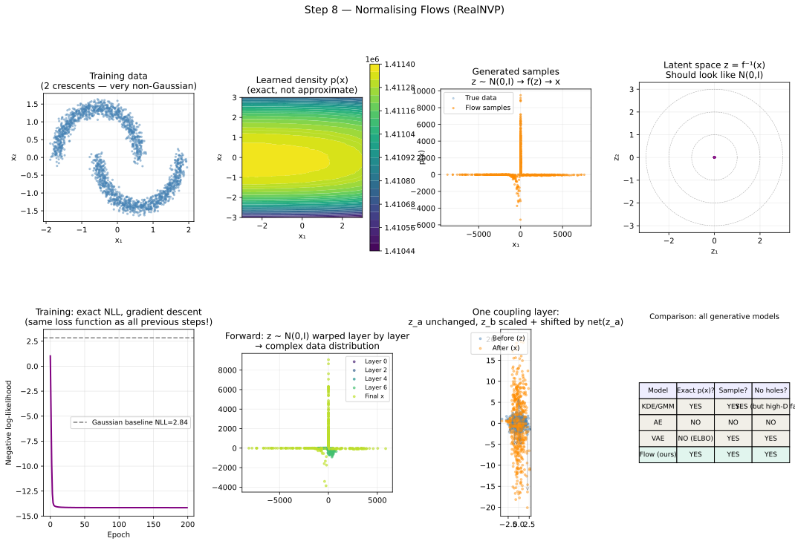

Machine Learning from Scratch: a Physicist's Road to Generative Models VIII
Section 8: Normalising Flows: Exact Densities with Invertible Networks
The one remaining limitation
After seven sections we have a generative model that actually works. The VAE draws samples from a prior \(\mathcal{N}(\mathbf{0}, \mathbf{I})\), decodes them through a neural network, and produces plausible events, no holes, no garbage output. The KL term in the loss filled the latent space, and the reparameterisation trick made the whole thing differentiable.
But there is one last imperfection, and it matters. The VAE does not give us the exact log-likelihood \(\log p_{\theta}(\mathbf{x})\). It gives us the ELBO, a lower bound on that quantity. The gap between the bound and the true value is not zero in general, and we have no way of knowing how large it is without additional analysis. More concretely: the decoder is trained to minimise the mean squared reconstruction error over the approximate posterior \(q_{\phi}(\mathbf{z} \mid \mathbf{x})\). This means generated samples are averages, the model hedges its bets by producing a blend of all the plausible outputs for a given latent code. In images, this manifests as blurring. In gravitational wave posterior samples, it would manifest as oversmoothed distributions that underestimate the true uncertainty structure.
The wish list for an ideal model has three items that we have not yet achieved simultaneously:
- Exact \(\log p(\mathbf{x})\): no approximation, no ELBO.
- Fast sampling: draw \(\mathbf{z} \sim \mathcal{N}(\mathbf{0}, \mathbf{I})\) and decode.
- No holes: the latent space is the prior by construction.
Normalising flows deliver all three. The key is a formula from first-year calculus that most physicists know by another name.
The core idea: probability is conserved
Start with a physical intuition
Imagine spreading paint uniformly along a rubber band, so that the paint represents a probability density \(p_z(z)\). The total amount of paint is one, probabilities must sum to one. Now stretch the rubber band by a factor of two: every point \(z\) maps to \(x = 2z\). What happens to the density?
The band is twice as long, but the total amount of paint has not changed. So the density at every point must halve: \(p_x(x) = p_z(x/2) \cdot \frac{1}{2}\). The factor of \(\frac{1}{2}\) is the derivative of the inverse transformation \(z = x/2\) with respect to \(x\): \(dz/dx = 1/2\). This is the change-of-variables formula in one dimension.
If instead we squash the band by a factor of two (\(x = z/2\), so \(z = 2x\)), the density doubles: \(p_x(x) = p_z(2x) \cdot 2\). The derivative of the inverse is now \(dz/dx = 2\).
The pattern is:
\[p_x(x) = p_z(f^{-1}(x)) \cdot \left| \frac{df^{-1}}{dx} \right|\]
The first factor asks "what \(z\) would map to this \(x\)?" The second factor, the absolute value of the derivative of the inverse transformation, accounts for the local stretching or squashing. It is what keeps the total probability equal to one even after the transformation.
Taking logarithms
As in every previous step, logarithms turn products into sums and make the formula numerically tractable:
\[\log p_x(x) = \log p_z(f^{-1}(x)) + \log \left| \frac{df^{-1}}{dx} \right|\]
This is the equation that defines normalising flows. Everything else in this article is engineering around these two terms.
Let us verify it on a concrete example. Take \(p_z(z) = \mathcal{N}(0, 1)\) and the transformation \(f(z) = 2z\), so \(f^{-1}(x) = x/2\) and \(|df^{-1}/dx| = 1/2\). Then:
\[p_x(x) = \mathcal{N}(x/2; 0, 1) \cdot \frac{1}{2} = \frac{1}{2} \cdot \frac{1}{\sqrt{2\pi}} \exp \left( -\frac{x^2}{8} \right) = \mathcal{N}(x; 0, 4)\]
Stretching a standard Gaussian by factor two produces a Gaussian with variance \(4 = 2^2\). The formula is consistent: \(\mathcal{N}(0, 1)\) stretched by two gives \(\mathcal{N}(0, 4)\), and the Jacobian factor \(1/2\) is what enforces this.
From one dimension to many: the Jacobian determinant
In \(D\) dimensions, \(\mathbf{x}\) and \(\mathbf{z}\) are vectors, and the transformation \(\mathbf{x} = f(\mathbf{z})\) is a vector-valued function. The derivative \(df^{-1}/dx\) generalises to the Jacobian matrix J, whose \((i, j)\) entry is \(J_{ij} = \partial z_i / \partial x_j\), the partial derivative of the \(i\)-th output of the inverse with respect to the \(j\)-th input.
The change-of-variables formula becomes:
\[\log p_{\mathbf{x}}(\mathbf{x}) = \log p_{\mathbf{z}}(f^{-1}(\mathbf{x})) + \log |\det \mathbf{J}|\]
The \(|\det \mathbf{J}|\) term is the absolute value of the determinant of the Jacobian matrix, the multi-dimensional generalisation of "how much is the transformation locally stretching space?". Just as the 1D derivative measured the stretch of the rubber band, the Jacobian determinant measures the local volume stretch of the full \(D\)-dimensional transformation.
In physics you have seen this before. When you change variables from Cartesian to spherical coordinates, the volume element picks up a factor \(r^2 \sin \theta\) — that is the Jacobian determinant of the coordinate transformation. When you integrate a probability density over a change of variables in a Bayesian calculation, the same factor appears. The normalising flow is the same operation, applied to a neural network transformation and computed automatically.
The computational problem
Computing the determinant of a general \(D \times D\) matrix costs \(\mathcal{O}(D^3)\) operations. For \(D = 100\) detector features, that is \(10^6\) operations per training step, multiplied by the batch size, multiplied by the number of training steps. This is too slow.
The solution is a clever architectural choice: design the transformation \(f\) so that its Jacobian is triangular. The determinant of a triangular matrix is simply the product of its diagonal entries, \(\mathcal{O}(D)\) operations. This is the entire motivation for the coupling layer, which we now derive.
Coupling layers: making the Jacobian triangular by design
A coupling layers is the fundamental building block of modern normalising flows. It is constructed so that the Jacobian is triangular by construction, making the determinant trivial to compute.
The construction
Split the \(D\)-dimensional input \(\mathbf{z}\) into two halves: \(\mathbf{z}_a\) (the first \(D/2\) dimensions) and \(\mathbf{z}_b\) (the remaining \(D/2\)). The forward transformation is defined as:
\[\mathbf{x}_a = \mathbf{z}_a\]
\[\mathbf{x}_b = \mathbf{z}_b \odot \exp(s(\mathbf{z}_a)) + t(\mathbf{z}_a)\]
where \(s(\cdot)\) and \(t(\cdot)\) are arbitrary neural networks called the scale network and the translation network, and \(\odot\) denotes element-wise multiplication. The first half passes through unchanged. The second half is scaled and shifted by amounts that depend on the first half.
Why the Jacobian is triangular
Let us compute the Jacobian of this transformation. The output is \((\mathbf{x}_a, \mathbf{x}_b)\) and the input is \((\mathbf{z}_a, \mathbf{z}_b)\). The Jacobian matrix has four blocks:
\[\mathbf{J} = \begin{pmatrix} \partial \mathbf{x}_a / \partial \mathbf{z}_a & \partial \mathbf{x}_a / \partial \mathbf{z}_b \\ \partial \mathbf{x}_b / \partial \mathbf{z}_a & \partial \mathbf{x}_b / \partial \mathbf{z}_b \end{pmatrix}\]
Since \(\mathbf{x}_a = \mathbf{z}_a\) exactly, the top-right block \(\partial \mathbf{x}_a / \partial \mathbf{z}_b = \mathbf{0}\), the first half of the output does not depend on the second half of the input at all. The Jacobian is therefore lower triangular:
\[\mathbf{J} = \begin{pmatrix} \mathbf{I} & \mathbf{0} \\ \partial \mathbf{x}_b / \partial \mathbf{z}_a & \text{diag}(\exp(s(\mathbf{z}_a))) \end{pmatrix}\]
The bottom-right block is diagonal because each output dimension \(x_{b,j}\) only depends on the corresponding input dimension \(z_{b,j}\) through the scaling: \(x_{b,j} = z_{b,j} \cdot \exp(s_j(\mathbf{z}_a)) + t_j(\mathbf{z}_a)\), so \(\partial x_{b,j} / \partial z_{b,j} = \exp(s_j(\mathbf{z}_a))\).
For a lower triangular matrix, the determinant is the product of diagonal entries. The diagonal entries are 1 (from the identity block) and \(\exp(s_j(\mathbf{z}_a))\) (from the scaling block). Therefore:
\[\log | \det \mathbf{J} | = \sum_{j} s_j(\mathbf{z}_a)\]
Just a sum of the scale network outputs. No matrix operations, no \(\mathcal{O}(D^3)\) computation, the log-determinant is free.
The inverse is equally simple
The inverse transformation, encoding data \(\mathbf{x}\) back to latent code \(\mathbf{z}\), needed during training, is:
\[\mathbf{z}_a = \mathbf{x}_a\]
\[\mathbf{z}_b = (\mathbf{x}_b - t(\mathbf{x}_a)) \odot \exp(-s(\mathbf{x}_a))\]
Just reverse the arithmetic. Notice a critical subtlety: the scale and translation networks \(s(\cdot)\) and \(t(\cdot)\) are evaluated at \(\mathbf{z}_a = \mathbf{x}_a\) in both directions, so the inverse only requires one forward pass through \(s\) and \(t\), not their inverse. This is the elegance of the coupling layer: \(s\) and \(t\) can be arbitrarily complex, non-invertible neural networks. The invertibility of the overall transformation is guaranteed by the structure, not by any constraint on the subnetworks.
Stacking layers: covering the whole space
A single coupling layer has one flaw: the first half \(\mathbf{z}_a\) is passed through unchanged, so the flow cannot directly transform those dimensions. The fix is simple: alternate which half is treated as \(\mathbf{z}_a\) across successive layers. In layer 1, the first half is fixed; in layer 2, the second half is fixed; in layer 3, the first half again; and so on. After enough layers, every dimension has been transformed many times as the "active" half.
The log-likelihood for a stack of \(K\) coupling layers is:
\[\log p_{\mathbf{x}}(\mathbf{x}) = \log p_{\mathbf{z}}(\mathbf{z}) + \sum_{k=1}^{K} \log | \det \mathbf{J}_k |\]
\[\log p_{\mathbf{x}}(\mathbf{x}) = \log p_{\mathbf{z}}(\mathbf{z}) + \sum_{k=1}^{K} \log | \det \mathbf{J}_k |\]
Each layer contributes its own log-determinant (just a sum of scale outputs), and they all add together. The Jacobian of the full composition is the product of the individual Jacobians, and the log-determinant of a product is the sum of log-determinants. This is the second place where logarithms make life easier.
The interactive widget from this step shows this process visually: start with \(\mathbf{z} \sim \mathcal{N}(0, 1)\), click through the layers, and watch the distribution being sculpted from a Gaussian blob into the two-crescent shape.
*Figure 1: Change-of-variables tab: choose a transform from the dropdown and drag the probe to any \(x\) value; the formula evaluates in real time showing \(\log p_z(z) + \log |df^{-1}/dx|\) at that point. Stacking layers tab: drag the slider from 1 to 5 layers and watch the distribution morph from a Gaussian to a progressively more complex shape, each colour is one layer's contribution.*
Training: exact negative log-likelihood
With the log-likelihood formula in hand, training is conceptually straightforward. For a dataset of \(N\) observations \(\{\mathbf{x}_i\}\), the training loss is the exact negative log-likelihood:
\[L(\theta) = -\frac{1}{N} \sum_{i=1}^{N} \log p_{\theta}(\mathbf{x}_i) = -\frac{1}{N} \sum_{i=1}^{N} \left[ \log p_{\mathbf{z}}(f_{\theta}^{-1}(\mathbf{x}_i)) + \sum_{k=1}^{K} \log | \det \mathbf{J}_k(\mathbf{x}_i) | \right]\]
The first term inside the brackets is \(\log \mathcal{N}(\mathbf{z}_i; \mathbf{0}, \mathbf{I}) = -\frac{1}{2}||\mathbf{z}_i||^2 - \frac{D}{2}\log 2\pi\), where \(\mathbf{z}_i = f_{\theta}^{-1}(\mathbf{x}_i)\) is obtained by running the data through the inverse flow (the encoder direction). The second term is the sum of log-determinants computed for free at each coupling layer.
We minimise \(L(\theta)\) by gradient descent, with backpropagation computing gradients through the entire stack of coupling layers. Nothing new, the same algorithm as every step in this series.
Compare this to the VAE:
| VAE | Normalising Flow | |
|---|---|---|
| What we optimise | ELBO (lower bound on \(\log p\)) | Exact \(\log p\) |
| Source of approximation | \(q_{\phi}(\mathbf{z} \mid \mathbf{x}) \neq p_{\theta}(\mathbf{z} \mid \mathbf{x})\) | None |
| Latent space | Learned, approximate posterior | Prior \(\mathcal{N}(\mathbf{0}, \mathbf{I})\) by construction |
| Sampling direction | \(\mathbf{z} \rightarrow \mathbf{x}\) (forward) | \(\mathbf{z} \rightarrow \mathbf{x}\) (forward) |
| Training direction | \(\mathbf{x} \rightarrow \mathbf{z}\) (inverse, via reparam.) | \(\mathbf{x} \rightarrow \mathbf{z}\) (inverse) |
| Generated sample quality | Blurry (decoder outputs mean) | Sharp (exact) |
The flow solves the blurring problem because there is no "decoder that outputs a mean", the transformation is deterministic and bijective. Given \(\mathbf{z}\), \(f(\mathbf{z})\) is a single point, not a distribution over points.
A worked example: two crescents
To make this concrete, the script trains a RealNVP flow (eight coupling layers, hidden dimension 32) on two interleaved crescent-shaped point clouds, a standard benchmark for density models because no Gaussian mixture can fit it. The four key diagnostic plots are:

*Figure 2: Eight panels. Top-left: training data, two thin curved crescents. Top-middle: the exact \(p(\mathbf{x})\) learned by the flow, shown as a filled contour map; two bright ridges trace the crescents. Top-right: 1000 new events generated by sampling \(\mathbf{z} \sim \mathcal{N}(0, 1)\) and applying the forward flow, they match the crescents closely. Top-far-right: the data encoded to latent space \(\mathbf{z} = f^{-1}(\mathbf{x})\); the concentric circles are \(1\sigma\), \(2\sigma\), \(3\sigma\) contours of the prior, the latent codes should fill them evenly. Bottom-left: training curve, exact NLL falling below the Gaussian baseline (dashed). Bottom-middle: the forward warp layer by layer, from Gaussian (dark) to crescent (yellow). Bottom-right: comparison table of all generative models in this series.*
The latent space panel (top-far-right) is the crucial diagnostic. If the flow has learned correctly, the encoded data \(\mathbf{z} = f^{-1}(\mathbf{x})\) should look like a sample from \(\mathcal{N}(0, 1)\). The two crescents, which are highly non-Gaussian, should be "unwarped" into a Gaussian blob. If there is clustering or structure in the latent space, the flow has not converged fully, the log-Jacobian terms are not yet large enough to account for the density differences between the data distribution and the prior.
The physics: where flows are used right now
We have been building toward this section for eight steps. Normalising flows are not a theoretical tool in physics, they are in production in data analysis pipelines at LIGO, ATLAS, CMS, and Fermi. Here is a precise account of how they are used, with enough detail to connect directly to the mathematics above.
Gravitational-wave parameter estimation: DINGO
The canonical application of flows in GW astronomy is DINGO (Deep INference for Gravitational-wave Observations), developed by Dax et al. and now used routinely alongside LALInference and Bilby.
The problem is: given strain data \(d\) from LIGO-Hanford, LIGO-Livingston, and Virgo, what is the posterior distribution \(p(\theta \mid d)\) over source parameters \(\theta = (m_1, m_2, \chi_1, \chi_2, d_L, \alpha, \delta, \iota, t_c, \phi_c)\)? Traditional MCMC (nested sampling, MCMC, variational) requires \(\mathcal{O}(10^6)\) likelihood evaluations per event, each involving the computation of a waveform model, totalling hours of computation for one detection.
DINGO replaces this with a conditional normalising flow. The architecture is a flow \(f_\theta(\mathbf{z}; d)\) whose coupling layers are conditioned on the strain data \(d\) through a shared neural network encoder (a GNPE embedding network). The flow is trained on millions of simulated \((d, \theta)\) pairs drawn from the prior. After training, producing \(\mathcal{O}(10^4)\) posterior samples for a new event takes seconds rather than hours.
The connection to the mathematics is direct. The conditional flow learns:
\[p_\theta(\theta \mid d) \approx p_{\mathbf{z}}(f_\theta^{-1}(\theta; d)) \cdot |\det \mathbf{J}_{f^{-1}}(\theta; d)|\]
where the Jacobian log-determinant is summed over all coupling layers exactly as derived above, and \(d\) enters each coupling layer's scale and translation networks as additional context. Training minimises the exact conditional NLL:
\[L = -\frac{1}{N} \sum_{i=1}^{N} [\log p_{\mathbf{z}}(f^{-1}(\theta_i; d_i)) + \log | \det \mathbf{J} |]\]
No ELBO. No approximation. The posterior samples produced by DINGO are drawn directly from the learned exact density.
Population inference: the mass spectrum of black holes
The LIGO-Virgo-KAGRA collaboration's population papers, most recently the O3b population analysis, fit a hyperparameter distribution \(p(\theta \mid \Lambda)\) over the detected events, where \(\Lambda\) encodes the shape of the BBH mass spectrum, the spin distribution, and the redshift evolution. This is a hierarchical Bayesian analysis: each event contributes its own posterior samples, and the goal is to infer the hyper-prior that is consistent with all of them simultaneously.
Flows enter in two places. First, the per-event posteriors from DINGO (or LALInference) are modelled as flows themselves, making them differentiable objects that can be evaluated at arbitrary \(\theta\) values without kernel density estimation. Second, the population model \(p(\theta \mid \Lambda)\) is sometimes itself parameterised as a flow over the physical parameter space, giving a flexible non-parametric alternative to the power-law + Gaussian mixture models used in current analyses.
GW anomaly detection
Given a flow trained on confirmed BBH events from the GWTC catalogue, any new trigger can be assigned an exact log-likelihood \(\log p_{\text{flow}}(\mathbf{x})\). Triggers with very low log-likelihood are unlike anything in the training set, potential new sources, unexpected physics, or previously unseen noise artefacts. This is the same anomaly detection principle from Step 6 (autoencoder reconstruction error), but now with an exact probability rather than a proxy. An event with \(\log p_{\text{flow}}(\mathbf{x}) < \log p_{\text{flow}}(\mathbf{x}_{5\%})\) — below the fifth percentile of training likelihoods — is a principled alert.
Fast detector simulation: CaloFlow and CaloDiffusion
Full GEANT4 simulation of calorimeter showers requires minutes per event. CaloFlow (ATLAS/CMS) replaces this with a flow conditioned on the incoming particle type and energy. Inference takes microseconds per shower. The training loss is the exact NLL over millions of GEANT4-simulated showers; at test time, the flow samples from \(p(\text{shower} \mid E, \text{particle type})\) with a single forward pass.
Simulation-based inference: FlowMC and the sbi library
Many physics problems have an intractable likelihood \(p(d \mid \theta)\), the probability of the observed data given the model parameters cannot be written down in closed form, only simulated. Traditional Bayesian inference is then blocked, because the likelihood is the core ingredient of Bayes' theorem.
Simulation-based inference (SBI) bypasses this by training a flow to approximate the posterior
\(p(\theta \mid d)\) directly from simulated \((\theta, d)\) pairs, without ever evaluating the likelihood.
The sbi Python library (Cranmer, Brehmer, Louppe 2020) implements this using normalising flows
as the density estimator. FlowMC combines flows with MCMC sampling to produce efficient proposals for high-dimensional posteriors.
Both are used for CMB parameter inference,
21-cm cosmology, large-scale structure, and gravitational lensing
analyses where the forward simulator is available but the likelihood is not.
What the code does
The hands-on material for this section is in a dedicated Jupyter notebook in the accompanying GitHub repository ↗. Each section of this series has its own notebook, so you can work through them independently and at your own pace without wading through unrelated code 😇.
The accompanying tutorial notebook ↗ is divided into five parts. Part A is the most important starting point: before any neural network appears, it verifies the change-of-variables formula numerically for the 1D transformation \(x = 2z\), comparing the formula \(p_x(x) = p_z(x/2) \cdot 1/2\) against direct evaluation of \(\mathcal{N}(x; 0, 4)\) at five test points. Every entry in the table should show "match=True". If you understand why this check makes sense, you understand the formula.
Part B generates the two-crescent dataset and standardises it. The crescent shape is the standard 2D benchmark for density models because it cannot be fit by any GMM and requires the flow to learn a non-trivially curved boundary.
Part C defines the full RealNVP architecture: the ScaleTranslateNet class (the \(s\) and \(t\)
subnetworks inside each coupling layer), the CouplingLayer class
(which implements the triangular Jacobian construction described above), and the
RealNVP class (which stacks the layers and implements both forward
for generation and inverse for training, plus log_prob which assembles
the full change-of-variables formula). Read the log_prob method carefully,
it is three lines of code that implement the entire mathematical derivation above:
run the inverse flow to get \(\mathbf{z}\), compute \(\log p_z(\mathbf{z})\)
as a Gaussian log-density, add the log-Jacobian accumulated during the inverse pass.
Part D trains the flow for 200 epochs with the Adam optimiser and a step learning rate schedule, printing both the NLL and the bits-per-dimension at every 40th epoch. Bits-per-dimension is the NLL divided by \(\log 2\) and the dimensionality, a units-normalised measure of compression quality used in the deep learning literature. Watch how it falls from near the Gaussian baseline value toward a lower limit as the flow learns the crescent structure.
Part E evaluates the trained model: it computes the log-likelihood on the full training set, generates 1000 new samples, encodes the training data to latent space, and evaluates the density on a \(80 \times 80\) grid for the contour plot. The key number is the gap between the flow NLL and the Gaussian baseline NLL, this is the information the flow has learned about the non-Gaussian structure of the data.
The complete picture
After eight steps, the full story can be told in one table.
| Step | Model | Loss | Labels? | Exact \(\log p\)? | Generates? |
|---|---|---|---|---|---|
| 1 | Linear regression | MSE = \(-\log p_{\text{Gauss}}(y \mid x)\) | Yes | — | No |
| 2 | Logistic regression | Cross-entropy = \(-\log p_{\text{Bernoulli}}(y \mid x)\) | Yes | — | No |
| 3 | Neural network | Cross-entropy (deeper model) | Yes | — | No |
| 4 | Regularised NN | CE + \(\alpha\|\theta\|^2\) | Yes | — | No |
| 5 | KDE / GMM | \(-\log p(x)\) | No | Yes (low-D) | Yes |
| 6 | Autoencoder | MSE (recon) | No | No | Unreliably |
| 7 | VAE | MSE + \(\beta\) KL (ELBO) | No | No (bound) | Yes |
| 8 | Normalising flow | Exact \(-\log p(x)\) | No | Yes | Yes |
Every row in this table is a different choice of model \(f(x;\theta)\) and loss function \(L(\theta)\). The optimisation algorithm, gradient descent plus backpropagation, never changed. The learning rate, the batch size, the Adam update rule: identical from Step 1 to Step 8. The models became more expressive and the losses became more carefully motivated, but the loop
\[\theta \leftarrow \theta - \eta \cdot \nabla_\theta L(\theta)\]
ran without modification every time.
This is the central lesson of the series. Machine learning is not a collection of unrelated methods. It is one idea, minimise a carefully chosen loss over a carefully chosen model, using gradient descent, instantiated at different levels of expressiveness and applied to different statistical questions. Fitting a line to star luminosities, classifying GW triggers as signal or noise, learning the BBH chirp mass spectrum, and sampling posteriors over merger parameters without MCMC: these are all the same algorithm, with different models and different loss functions plugged in.
The physicist's version of this statement is: you have been doing machine learning since the first time you minimised a \(\chi^2\). Every step from linear regression to normalising flows has been a generalisation of that operation. What changed is the richness of the function class available to \(f(x;\theta)\), not the principle behind the optimisation.